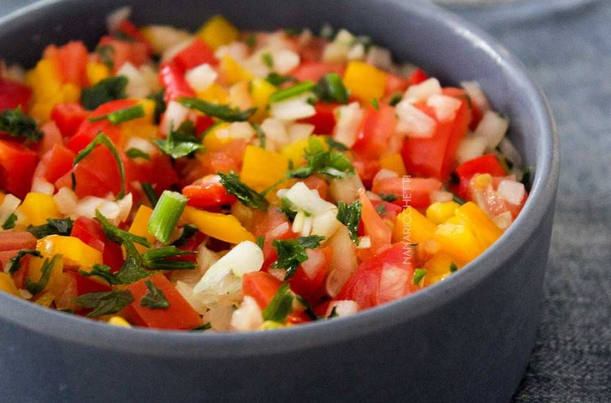

Vinagrete Clássico
Imagem da receita

Clique aqui para abrir a imagem
Ingredientes (serve 4 pessoas)
- 3 tomates médios firmes
- 1 cebola média
- ½ pimentão (verde ou misto)
- Cheiro-verde a gosto (salsinha + cebolinha)
- 3 colheres (sopa) de azeite
- 2 colheres (sopa) de vinagre (ou suco de 1 limão médio)
- ½ colher (chá) de sal
- 1 pitada de pimenta-do-reino
- 3 colheres (sopa) de água
Modo de Preparo
- Corte tudo em cubinhos pequenos e uniformes.
- Quanto menor e mais parecido o corte, melhor fica a textura.
- Tire a ardência da cebola deixando de molho em água por 5 minutos e escorra.
- Misture tomate, cebola, pimentão e cheiro-verde em uma tigela.
- Acrescente o azeite, vinagre (ou limão), sal e pimenta.
- Mexa bem e deixe descansar por pelo menos 20 minutos na geladeira.
Dica: O tempo de descanso ajuda os sabores se misturarem melhor.
Menu